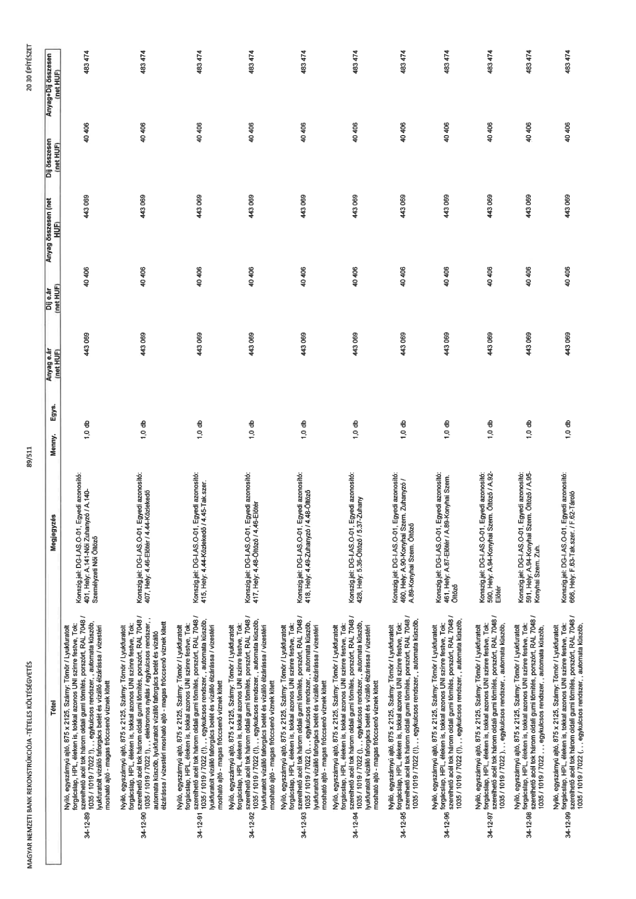

| Tétel | Megjegyzés | Menny. | Egys. | Anyag e.ár (net HUF) | Díj e.ár (net HUF) | Anyag összesen (net HUF) | Díj összesen (net HUF) | Anyag+Díj összesen (net HUF) |
|---|---|---|---|---|---|---|---|---|
| 34-12-89 | Nyíló, egyszárnyú ajtó, 875 x 2125, Szárny: Tömör / Lyukfúratolt forgácslap, HPL, éleken is, tokkal azonos UNI színre festve, Tok: szerelhető acél tok három oldali gumi tömítés, porszórt, RAL 7048 / 1035 / 1019 / 7022 (!),, egykulcsos rendszer,, automata küszöb, lyukfúratolt vízálló faforgács betét és vízálló élzárása / vízestéri mosható ajtó - magas fröccsenő víznek kitett; Konszign.jel: DG-I.AS.O-01, Egyedi azonosító: 401, Hely: A.141-Női Zuhanyzó / A.140-Személyzeti Női Öltöző | 1,0 | db | 443 069 | 40 406 | 443 069 | 40 406 | 483 474 |
| 34-12-90 | Nyíló, egyszárnyú ajtó, 875 x 2125, Szárny: Tömör / Lyukfúratolt forgácslap, HPL, éleken is, tokkal azonos UNI színre festve, Tok: szerelhető acél tok három oldali gumi tömítés, porszórt, RAL 7048 / 1035 / 1019 / 7022 (!),, elektromos nyitás / egykulcsos rendszer,, automata küszöb, lyukfúratolt vízálló faforgács betét és vízálló élzárása / vízestéri mosható ajtó - magas fröccsenő víznek kitett; Konszign.jel: DG-I.AS.O-01, Egyedi azonosító: 407, Hely: 4.46-Előtér / 4.44-Közlekedő | 1,0 | db | 443 069 | 40 406 | 443 069 | 40 406 | 483 474 |
| 34-12-91 | Nyíló, egyszárnyú ajtó, 875 x 2125, Szárny: Tömör / Lyukfúratolt forgácslap, HPL, éleken is, tokkal azonos UNI színre festve, Tok: szerelhető acél tok három oldali gumi tömítés, porszórt, RAL 7048 / 1035 / 1019 / 7022 (!),, egykulcsos rendszer,, automata küszöb, lyukfúratolt vízálló faforgács betét és vízálló élzárása / vízestéri mosható ajtó - magas fröccsenő víznek kitett; Konszign.jel: DG-I.AS.O-01, Egyedi azonosító: 415, Hely: 4.44-Közlekedő / 4.45-Tak.szer. | 1,0 | db | 443 069 | 40 406 | 443 069 | 40 406 | 483 474 |
| 34-12-92 | Nyíló, egyszárnyú ajtó, 875 x 2125, Szárny: Tömör / Lyukfúratolt forgácslap, HPL, éleken is, tokkal azonos UNI színre festve, Tok: szerelhető acél tok három oldali gumi tömítés, porszórt, RAL 7048 / 1035 / 1019 / 7022 (!),, egykulcsos rendszer,, automata küszöb, lyukfúratolt vízálló faforgács betét és vízálló élzárása / vízestéri mosható ajtó - magas fröccsenő víznek kitett; Konszign.jel: DG-I.AS.O-01, Egyedi azonosító: 417, Hely: 4.48-Öltöző / 4.46-Előtér | 1,0 | db | 443 069 | 40 406 | 443 069 | 40 406 | 483 474 |
| 34-12-93 | Nyíló, egyszárnyú ajtó, 875 x 2125, Szárny: Tömör / Lyukfúratolt forgácslap, HPL, éleken is, tokkal azonos UNI színre festve, Tok: szerelhető acél tok három oldali gumi tömítés, porszórt, RAL 7048 / 1035 / 1019 / 7022 (!),, egykulcsos rendszer,, automata küszöb, lyukfúratolt vízálló faforgács betét és vízálló élzárása / vízestéri mosható ajtó - magas fröccsenő víznek kitett; Konszign.jel: DG-I.AS.O-01, Egyedi azonosító: 418, Hely: 4.49-Zuhanyzó / 4.48-Öltöző | 1,0 | db | 443 069 | 40 406 | 443 069 | 40 406 | 483 474 |
| 34-12-94 | Nyíló, egyszárnyú ajtó, 875 x 2125, Szárny: Tömör / Lyukfúratolt forgácslap, HPL, éleken is, tokkal azonos UNI színre festve, Tok: szerelhető acél tok három oldali gumi tömítés, porszórt, RAL 7048 / 1035 / 1019 / 7022 (!),, egykulcsos rendszer,, automata küszöb, lyukfúratolt vízálló faforgács betét és vízálló élzárása / vízestéri mosható ajtó - magas fröccsenő víznek kitett; Konszign.jel: DG-I.AS.O-01, Egyedi azonosító: 428, Hely: 5.36-Öltöző / 5.37-Zuhany | 1,0 | db | 443 069 | 40 406 | 443 069 | 40 406 | 483 474 |
| 34-12-95 | Nyíló, egyszárnyú ajtó, 875 x 2125, Szárny: Tömör / Lyukfúratolt forgácslap, HPL, éleken is, tokkal azonos UNI színre festve, Tok: szerelhető acél tok három oldali gumi tömítés, porszórt, RAL 7048 / 1035 / 1019 / 7022 (!),, egykulcsos rendszer,, automata küszöb, | 1,0 | db | 443 069 | 40 406 | 443 069 | 40 406 | 483 474 |
| 34-12-96 | Nyíló, egyszárnyú ajtó, 875 x 2125, Szárny: Tömör / Lyukfúratolt forgácslap, HPL, éleken is, tokkal azonos UNI színre festve, Tok: szerelhető acél tok három oldali gumi tömítés, porszórt, RAL 7048 / 1035 / 1019 / 7022 (!),, egykulcsos rendszer,, automata küszöb, | 1,0 | db | 443 069 | 40 406 | 443 069 | 40 406 | 483 474 |
| 34-12-97 | Nyíló, egyszárnyú ajtó, 875 x 2125, Szárny: Tömör / Lyukfúratolt forgácslap, HPL, éleken is, tokkal azonos UNI színre festve, Tok: szerelhető acél tok három oldali gumi tömítés, porszórt, RAL 7048 / 1035 / 1019 / 7022 (!),, egykulcsos rendszer,, automata küszöb, | 1,0 | db | 443 069 | 40 406 | 443 069 | 40 406 | 483 474 |
| 34-12-98 | Nyíló, egyszárnyú ajtó, 875 x 2125, Szárny: Tömör / Lyukfúratolt forgácslap, HPL, éleken is, tokkal azonos UNI színre festve, Tok: szerelhető acél tok három oldali gumi tömítés, porszórt, RAL 7048 / 1035 / 1019 / 7022 (!),, egykulcsos rendszer,, automata küszöb, | 1,0 | db | 443 069 | 40 406 | 443 069 | 40 406 | 483 474 |
| 34-12-99 | Nyíló, egyszárnyú ajtó, 875 x 2125, Szárny: Tömör / Lyukfúratolt forgácslap, HPL, éleken is, tokkal azonos UNI színre festve, Tok: szerelhető acél tok három oldali gumi tömítés, porszórt, RAL 7048 / 1035 / 1019 / 7022 (!),, egykulcsos rendszer,, automata küszöb, | 1,0 | db | 443 069 | 40 406 | 443 069 | 40 406 | 483 474 |
